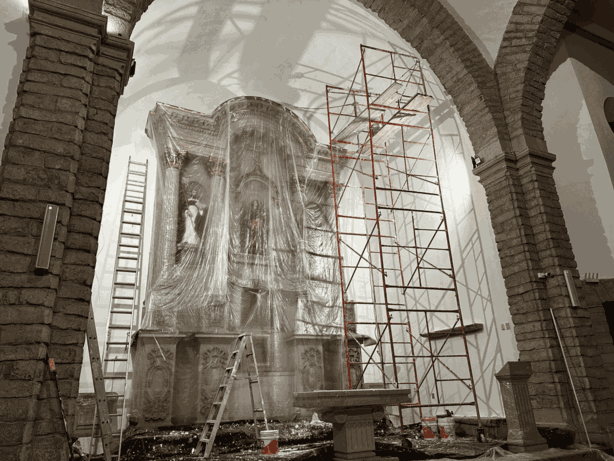
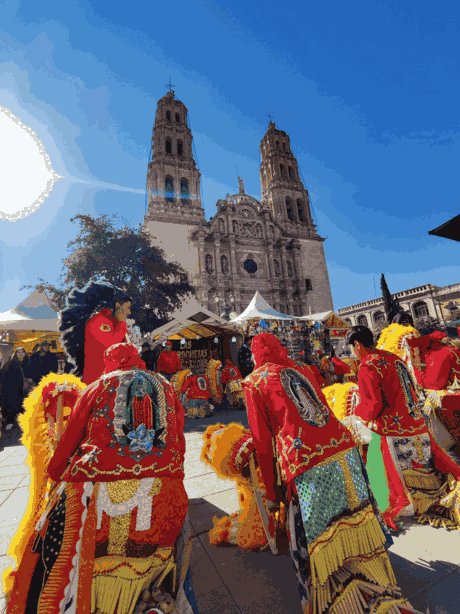

"La Orden de Predicadores fue fundada en 1216 por Santo Domingo de Guzmán en Toulouse, y los primeros Frailes Dominicos llegaron tierras de México en 1526; estamos cumpliendo 500 años de la llegada de los primeros frailes".
Presentamos una herramienta de software (Voyant Tools) que nos permite hacer distintos análisis textuales de las Sagradas Escrituras. En el ejemplo el Evangelio de Mateo en 5 traducciones distintas, nos permite hacer análisis de estilos literarios.
A través del siguiente enlace puedes acceder a una página donde conocerás más sobre el Análisis de Textos a través de software especializado y el mismo ejemplo que aquí ponemos en la herramienta Voyant Tools:

